Featured Project
StreetJams: Designing a more reliable way to discover free items locally
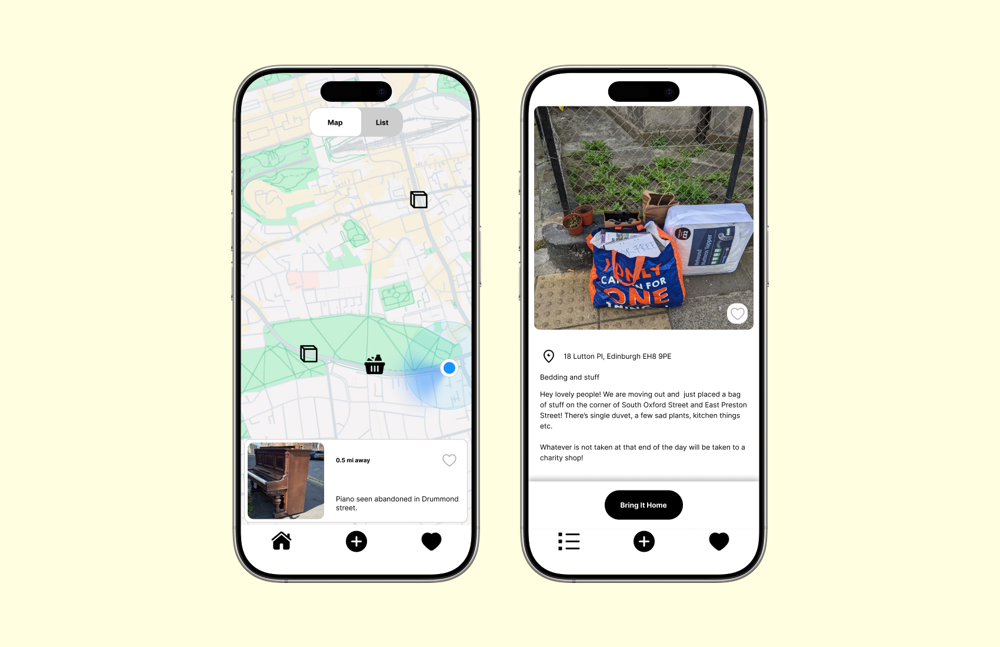
Overview
StreetJams is a location-based mobile app for discovering, sharing and collecting free items left in the street.
Role
Product Designer · UX Researcher · Developer
Tools
Figma · React Native · Expo · Supabase
What I changed
Discovery
Designed map + list navigation to support both spatial exploration and quick scanning of nearby items.
Reliability
Introduced item status tracking to help users judge whether a find is still worth the trip.
Contribution
Simplified the posting flow to make sharing a street find quick and low-effort.
The MVP is now being developed and tested in real-world conditions.
The Opportunity
Free items are already being shared — but discovery is fragmented.
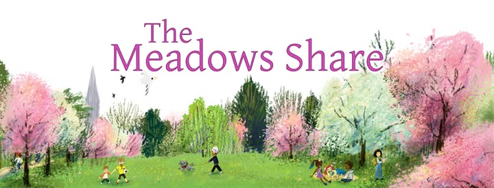
Fragmented
People rely on Facebook groups, community platforms or chance encounters to find items.
Uncertain
Items can disappear before someone arrives, making online information difficult to trust.
Time-sensitive
The value of a street find depends heavily on location, timing and availability.
Opportunity: Make local sharing easier to discover — and more reliable to act on.
01. Research
I combined semi-structured interviews, platform analysis and real-world observation to understand how people discover and share free items.
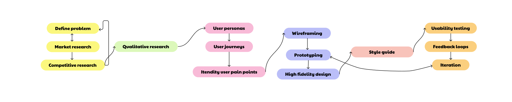
Research approach
The key insight
The problem wasn't finding things. It was knowing whether they were still worth finding.
Reliability
Users were willing to compromise on item quality, but not on outdated or unreliable information.
Discovery habit
Users liked quickly scanning what was available nearby, especially while already out and about.
Contribution
Posting needed to be quick and low-effort to encourage people to contribute.
These insights shifted the product focus from simply improving browsing to reducing uncertainty and supporting confident decisions.
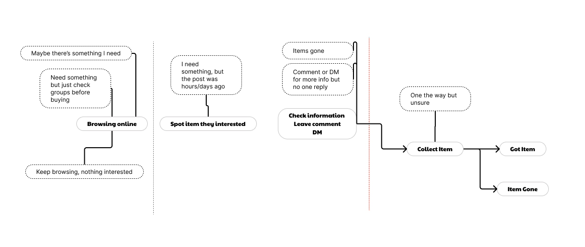
Online sharing journey
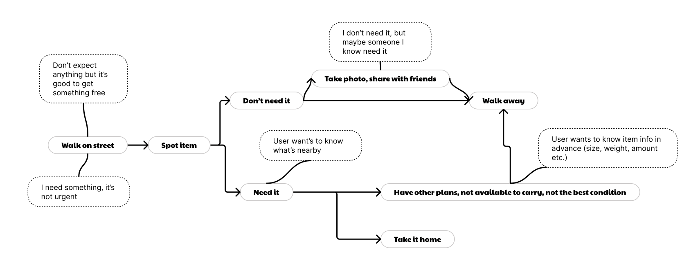
Real-world street discovery journey
From insight to product decisions
Research pointed to three priorities: fast discovery, reliable availability and low-friction posting. I used these principles to prioritise the MVP and evaluate design trade-offs.
Discovery
Supporting two discovery behaviours
Problem:
Users discovered items in different ways — some preferred
spatial exploration, while others wanted to quickly scan nearby
options.
Decision:
I introduced map + list views, using the map as the default
while keeping the list one tap away.
Trade-off:
More UI complexity in exchange for supporting different
discovery behaviours.
Reliability
Making availability visible
Problem:
Users could travel to an item only to discover that it had
already been collected or was no longer available.
Decision:
I introduced user-updated item states such as
collected and unavailable.
Validation:
Users consistently checked availability before deciding
whether to travel.
Impact:
The status system makes availability part of the core
decision-making experience rather than secondary information.
Contribution
Making posting effortless
Problem:
Sharing a street find requires enough location context for
someone else to find it, but too much input can discourage
contribution.
Decision:
I minimised required inputs while preserving the location
information people naturally use when describing street finds.
Trade-off:
Less structured data in exchange for lower contribution friction.
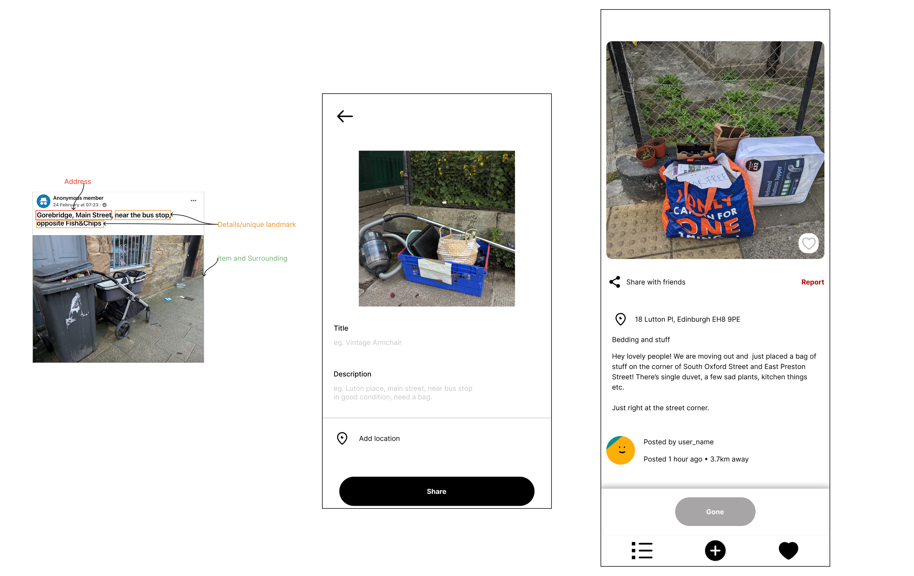
Posting flow
Analysis of existing posts showed that people naturally combine street names, nearby landmarks and visual cues when describing where an item is.
Design principle: Location doesn't need to be precise — it needs to be understandable.
Wireframing
I translated the research insights into core user flows before moving into high-fidelity design. This helped keep each screen tied to a specific user need and MVP priority.
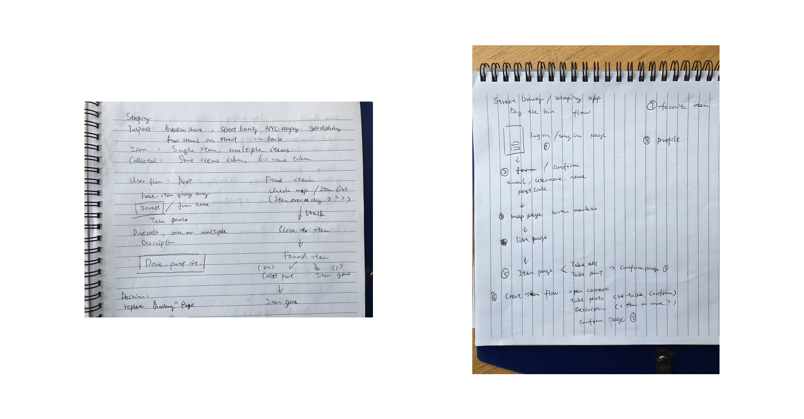
App structure and user flow
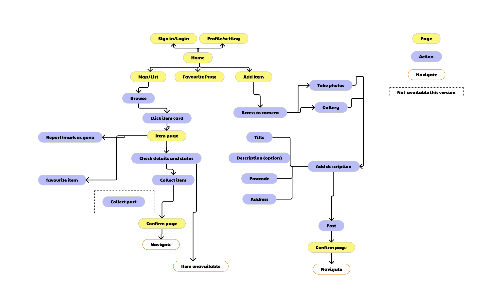
Core user flow
Sketching
I explored the information architecture and navigation patterns through low-fidelity sketches before committing to visual design.
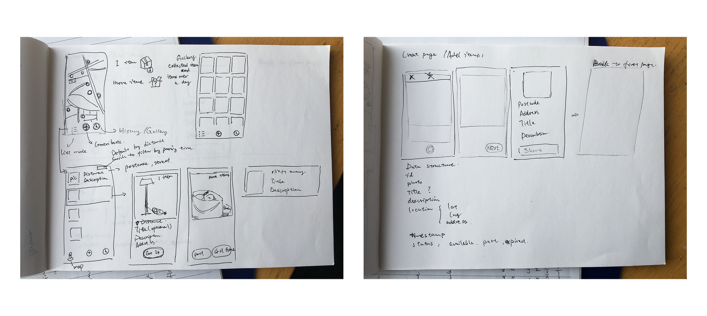
Sketching and wireframing
Visual design & prototyping
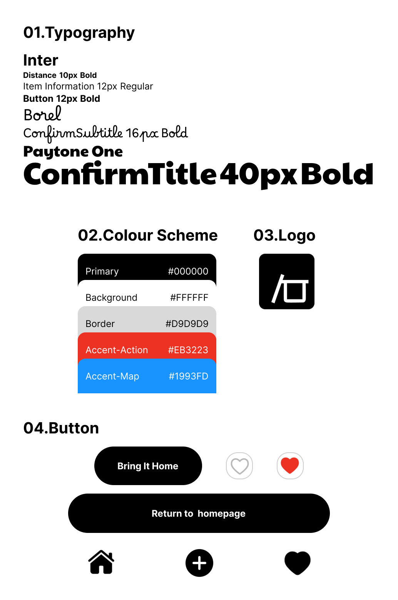
Visual design system
Design system
I refined typography, colour, iconography and component patterns alongside the product design, creating a visual system that could support both the prototype and production implementation.
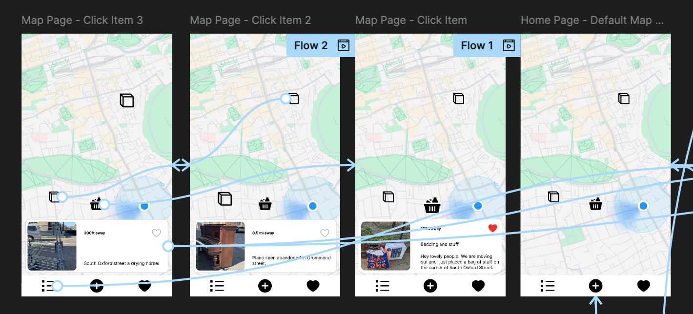
High-fidelity prototype
I built an interactive prototype in Figma with key states and interactions represented so usability testing could focus on realistic product behaviour rather than static screens.
02. Usability Testing
I ran task-based usability tests using the high-fidelity prototype, focusing on discovery, posting and item status.
Sessions were conducted in person, allowing me to observe hesitation, confusion and workarounds and follow up in real time.
Testing changed the product
Gallery
Finding:
Users couldn't identify a clear scenario for viewing item history.
Response:
Removed the Gallery feature and replaced it with a Favourites
screen aligned with a clearer user need.
Item status
Finding:
Partial collection introduced confusion around item states.
Response:
Simplified status handling to reduce cognitive load.
MVP scope
Finding:
Partial collection created a complex edge case.
Decision:
I deferred the problem rather than adding complexity to the MVP.
The priority was to validate the core collection journey first.
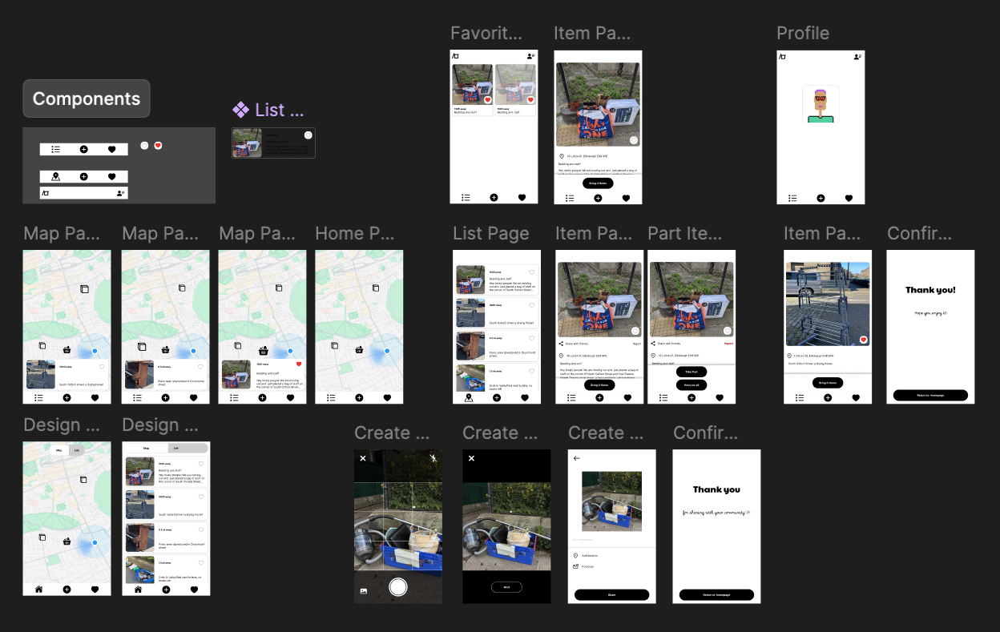
Final product design
03. Impact & next steps
The project reinforced an important product principle: an effective MVP is not the one with the most features, but the one that validates the riskiest assumptions early.
Validated
Users consistently checked availability before deciding whether to travel, and posting was perceived as a low-effort task.
Expected impact
Reduce unnecessary trips, increase confidence during discovery and make contributing easier.
Next to measure
Collection success rate, posting completion and availability accuracy.
Current status
StreetJams is now live on iOS and Android, with 300+ downloads across both platforms.
I'm continuing to iterate on the product based on real-world user behaviour, feedback and usage patterns.
What I'd explore next
Real-world use introduces constraints that are difficult to reproduce in a prototype — particularly unreliable connectivity and rapidly changing item availability.
One area I'm exploring next is a local-first approach, allowing users to continue browsing and posting in low or no-network conditions.